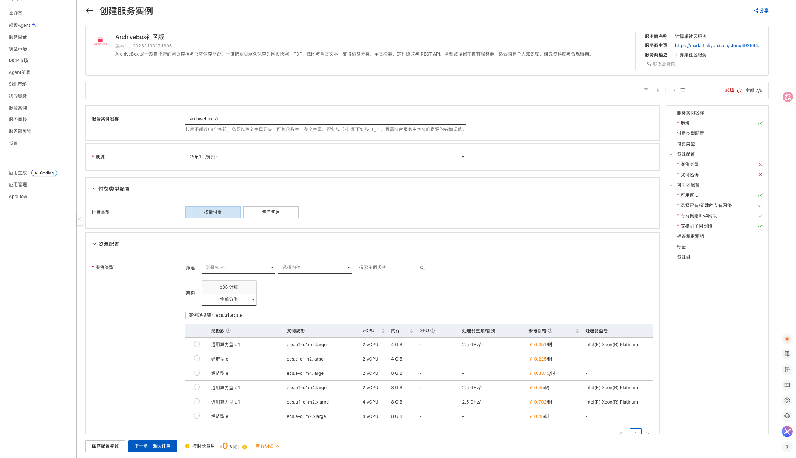
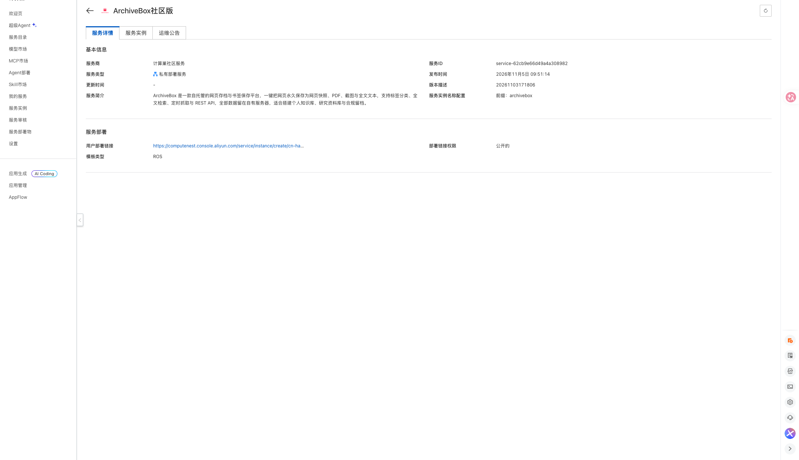
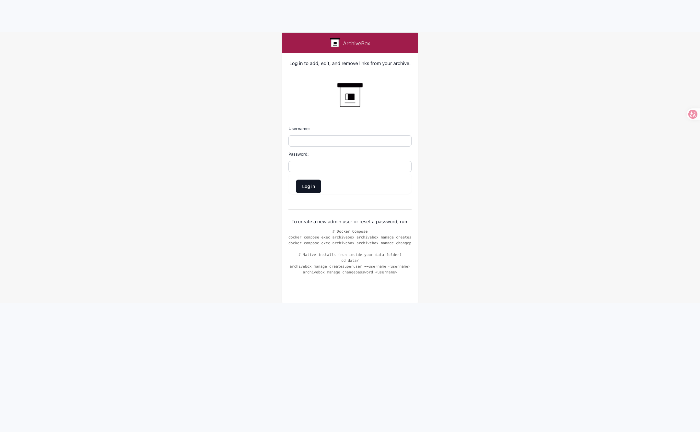

ArchiveBox社区版计算巢部署文档
服务说明
ArchiveBox 是一款自托管的网页存档与书签保存平台：把网址丢进去，它会永久保存页面的 HTML、PDF、截图与全文文本，支持全文检索、定时抓取与 REST API。本计算巢服务采用单机 ECS 部署，ECS 镜像内已预置 ArchiveBox 与 Docker Compose 运行环境，存档数据全部保存在实例本机。
服务默认开启登录鉴权，访问入口为实例公网 IP 的 5797 端口。
计费说明
通过此服务模板构建服务不产生费用。用户部署服务实例时，资源费用主要涉及：
- ECS 实例规格
- 系统盘容量（模板固定 200 GiB ESSD）
- 公网带宽（模板固定 5 Mbps）
计费方式支持按量付费和包年包月，预估费用会在部署前实时展示。
RAM账号所需权限
若使用 RAM 用户创建服务实例，需要在创建服务实例前为该 RAM 用户添加相应权限。
| 权限策略名称 | 备注 |
|---|---|
| AliyunECSFullAccess | 管理云服务器 ECS 的权限 |
| AliyunVPCFullAccess | 管理专有网络 VPC 的权限 |
| AliyunROSFullAccess | 管理资源编排 ROS 的权限 |
| AliyunComputeNestUserFullAccess | 管理计算巢服务用户侧资源的权限 |
服务实例部署流程
部署步骤
- 打开计算巢服务实例创建页面，选择部署地域，填写实例规格、实例密码。网络可选择新建 VPC，也可以选择已有 VPC 与交换机。

-
确认询价明细后点击 下一步：确认订单，同意服务协议并点击 立即创建。
-
等待服务实例部署完成。部署完成后，在服务实例详情页的 输出 区域查看
archivebox_5797_url访问地址和AdminPassword管理员密码。服务详情页信息如下：

- 用浏览器打开
http://<实例公网IP>:5797，使用用户名admin与输出中的管理员密码登录。

首次使用配置
1. 保存第一个网页
登录后进入 Snapshots 页面，点击 Add，粘贴目标网址并提交，ArchiveBox 会开始抓取并保存该页面。
2. 命令行保存
登录实例后可以通过容器内的 CLI 批量保存：
docker exec archivebox archivebox add --depth=1 'https://example.com'
docker exec archivebox archivebox help
参数说明
| 参数 | 说明 | 默认值 |
|---|---|---|
| VpcOption | 网络类型，新建 VPC 或使用已有 VPC | NewVPC |
| VpcCidrBlock | 新建 VPC 的网段 | 192.168.0.0/16 |
| VSwitchCidrBlock | 新建交换机的网段 | 192.168.1.0/24 |
| EcsInstanceType | ECS 实例规格 | 无 |
| InstancePassword | 实例登录密码 | 无 |
| PayType | 付费类型 | PostPaid |
| ZoneId | 可用区 | 无 |
| VpcId / VSwitchId | 已有 VPC 与交换机 ID（选择已有 VPC 时填写） | 空 |
输出说明
| 输出 | 说明 |
|---|---|
| archivebox_5797_url | ArchiveBox 访问地址 |
| AdminUsername | 管理员用户名（admin） |
| AdminPassword | 系统随机生成的管理员密码 |
安全与使用说明
- 出厂关闭匿名索引页与匿名快照访问（
PUBLIC_INDEX=False、PERMISSIONS=private、PUBLIC_ADD_VIEW=False），未登录只能看到登录页。 - 出厂关闭向 archive.org 等外部服务提交存档，所有抓取只在本机完成。
- 默认安全模式为
safe-onedomain-nojsreplay，适配纯公网 IP 单域访问，带 JavaScript 的全量交互回放会被中和；静态快照、PDF、截图与全文检索不受影响。 - 环境变量优先级高于数据目录下的
ArchiveBox.conf，上述安全项在管理后台里改不动。如需调整，请登录实例编辑/opt/archivebox/.env后执行docker compose up -d。 ADMIN_PASSWORD只在首次初始化建号时生效；需要改密时执行：
bash
docker exec -it archivebox archivebox manage changepassword admin
- 管理员密码以环境变量方式注入容器，会出现在
docker inspect输出与进程列表中；实例为单租户独占，仍建议登录后修改密码，并在公共网络下避免长时间保持会话。 - 存档数据保存在系统盘
/opt/archivebox/data（含index.sqlite3与快照文件），释放服务实例会一并删除。
© 2009-2022 Aliyun.com 版权所有